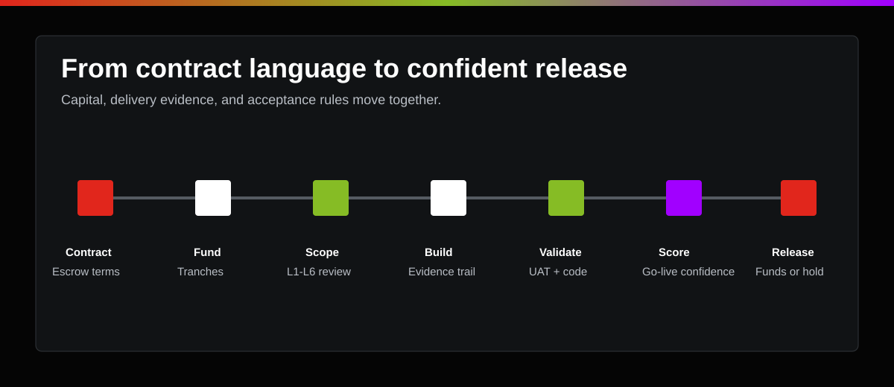

Template the release rules.
Obligations, acceptance criteria, evidence requirements, and confidence thresholds are written into the commercial agreement before work begins.
Start to finish
Libertas begins before the first invoice. Escrow language, funding tranches, validation rules, evidence requirements, and release thresholds are built into the commercial structure from day one.

The process is designed to protect both the project sponsor and the delivery provider.
Escrow structure
Libertas provides templated language for payment and escrow terms. The agreement defines the client, vendor, Libertas as escrow agent, funded tranches, release conditions, validation gates, override rights, dispute path, and documentation requirements.
Obligations, acceptance criteria, evidence requirements, and confidence thresholds are written into the commercial agreement before work begins.
The client deposits capital into an escrow account for the project, jointly held for the transaction by the client and vendor with Libertas named as escrow agent.
Funds are requested and disbursed through the Libertas Escrow Platform backed by UMB Bank of Kansas City.
Validation model
Libertas adapts a SPEAR-informed discipline for discovery, requirements, technical planning, project rescue, UAT, and go-live review. The goal is not ceremony. The goal is measured control before funds move.
Confirm business outcomes, executive priorities, operating constraints, in-scope domains, and the decision rules that matter to payment release.
Break strategy into functional groups, capabilities, ownership, process maturity, and the operational stress points the project must address.
Convert capabilities into clear requirement statements, identify gaps, and separate standard-platform behavior from custom or non-standard work.
Decide what must be delivered now, what can wait, what carries risk, and which obligations attach to each funded tranche.
Document the user experience, logic, data, decisions, and acceptance tests that prove custom or critical work is ready.
Define how the solution will be built, integrated, secured, tested, supported, and reviewed before release is requested.
AI-powered, human-led
Libertas reviews contract terms, requirements, process flows, capability statements, and acceptance criteria so every release has a traceable basis.
UAT scenarios are crosswalked to obligations. Passes, failures, severity, workarounds, and stakeholder decisions are captured in the release record.
Review covers custom code, integration resilience, data handling, security, performance, maintainability, environment readiness, and deployment risk.
For distressed projects, Libertas uses a recovery lens across surveillance, performance, excellence, automation, and requirements to locate the real breakdown.
The release must meet the agreed go-live confidence threshold before Libertas recommends disbursement.
Yes. The client can release funds at any time. Libertas documents whether the release was made with confidence or with known risk.
Operational steps
Add escrow, tranche, validation, override, and dispute language to the contract.
Set up the escrow structure and transaction parties for funded tranches.
Client deposits project capital in tranches before release gates are reached.
Vendor submits requirements, artifacts, UAT evidence, code-review records, and exceptions.
AI-assisted checks and human reviewers evaluate the release package.
Libertas calculates go-live confidence against the release threshold.
Funds are released, held, disputed, or overridden with the record intact.
Fee model
Libertas is not compensated by investing escrowed money or retaining interest. The business model is a transaction fee on the total escrow account, aligned to independent governance rather than float.
The escrow fee pays for platform administration, evidence management, independent validation, release scoring, and the governance record that protects both sides.
Escrow brief
Use this checklist to frame the first conversation with counsel, the project sponsor, the vendor, and the Libertas agency team.
Copy a briefing outline you can adapt for the project team.